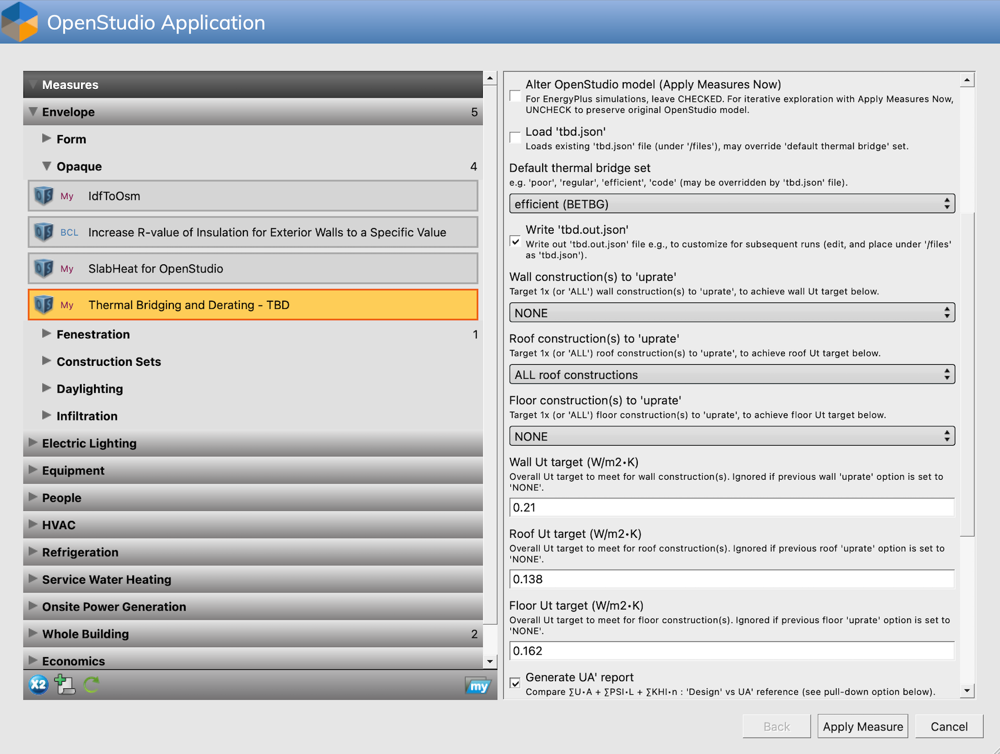
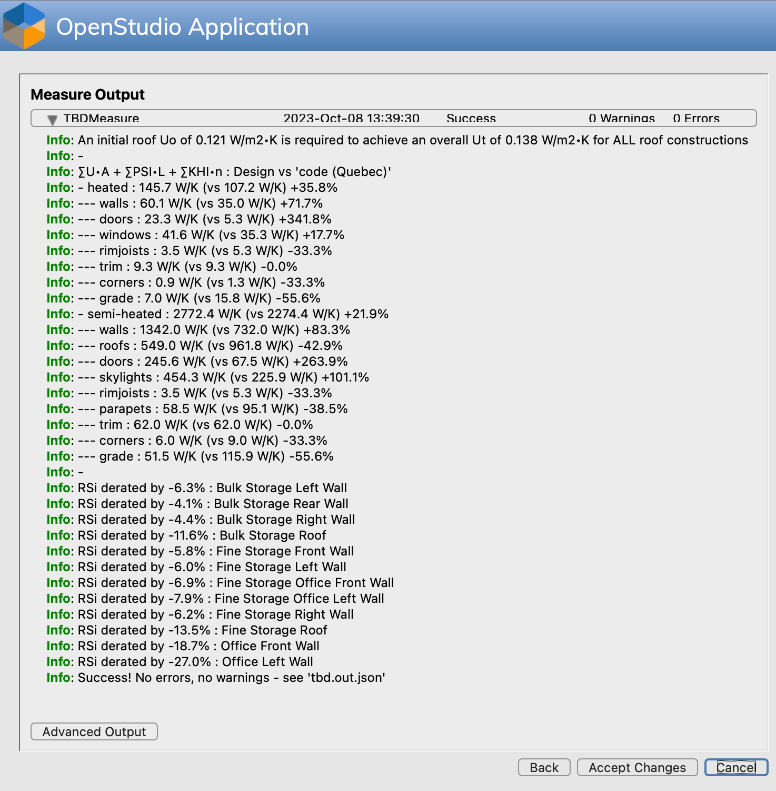

Launching
OpenStudio users typically first need to specify where downloaded measures are stored on their workstation (Preferences > Change My Measures Directory) - just download TBD in there (click on the download links at the top of the page, or download from GitHub or BCL - search for “tbd” or “rd2”). Then in the OpenStudio Application, simply drag & drop TBD in the Measures tab.
As with other OpenStudio measures, by default TBD does not modify the original OpenStudio model (e.g. with new derated constructions). OpenStudio instead makes a behind-the-scenes copy of the model, which in turn is modified by measures before simulation. Although the terminology may be at first confusing, leave the Alter OpenStudio model option CHECKED for EnergyPlus simulations (see menu options). This checkbox option is really there for Apply Measures Now cases, as detailed below. Once the Default thermal bridge set is selected, save the model and run the simulation.
Apply Measures Now
The original intent of an Apply Measures Now feature in OpenStudio is to irreversibly alter a building model without the need to run an EnergyPlus simulation. For instance, the KIVA options in TBD work best in Apply Measures Now mode: best leave the Alter OpenStudio model option CHECKED in such cases, while ideally relying on the default “(non thermal bridging)” set.
However, there are Apply Measures Now situations where permanent changes to an OpenStudio model aren’t warranted or desirable, in which case it becomes critical to UNCHECK the Alter OpenStudio model option:
-
Iterative investigations: Users may simply want to get a status report of how well they’re managing thermal bridging in their projects. TBD provides the same user feedback including errors & warnings, in either mode.
-
UA’ reports: Similarly, TBD can generate at any moment UA’ summaries (often admissible building energy code compliance paths). Same for uprating features.
-
JSON output: TBD users can generate a complete, detailed list of every major thermal bridge in their OpenStudio model, which may be useful for automating cost estimation or simply for further customization.
An example of an Apply Measures Now setup:

Here, Apply Measures Now will generate a UA’ report (MD-formatted), as well as a full JSON output file - complete with all edges, uprated Uo factors for roofs, UA’ summaries, logs, etc. Note that this performance snapshot will NOT alter the OpenStudio model - the first menu option here remains UNCHECKED. Clicking on Apply Measure …

If unsatisfied with the results (e.g. too costly to comply to NECB 2017 prescriptive roof requirements, wall detailing may need to be revised), then the user simply needs to Back out, tweak inputs again, then re-Apply Measure, reassess, and so on … Once satisfied with a winning combination of variables, press Accept Changes, then save the OpenStudio model to retrieve the newly-generated UA’ and JSON files (see Reporting to locate saved files). Take note of the winning combination of inputs - you’ll likely need to reapply these for EnergyPlus simulations down the line.
A word of caution. Older versions of the OpenStudio Application will NOT copy over such .md or .json files generated by Apply Measures Now … if these files already exist in the model files folder. If needed, simply rename or delete the existing files before opening the OpenStudio model.